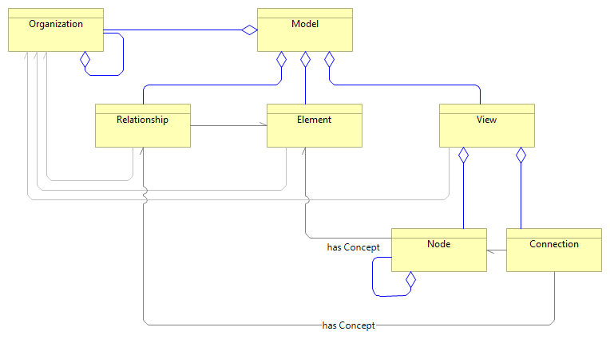

pyArchimate – Public API shim
pyArchimate.pyArchimate is a compatibility shim that re-exports the full
public API from the individual sub-modules (Model, Element,
Relationship, View, Node & Connection, Enumerations, Exceptions,
Helpers). Importing from this shim gives access to every public
symbol in one place.
{kind=link}

Module contents
Compatibility shim that re-exports legacy and modular APIs.
- class pyArchimate.pyArchimate.AccessType(*values)[source]
Bases:
str,EnumEnumeration of Access Relationship types
- Access = 'Access'
- Read = 'Read'
- ReadWrite = 'ReadWrite'
- Write = 'Write'
- class pyArchimate.pyArchimate.ArchiType(*values)[source]
Bases:
str,EnumEnumeration of ArchiMate element and relationship types.
Members cover all ArchiMate 3.x layers: Strategy, Motivation, Business, Application, Technology, Physical, and Implementation & Migration.
Business layer elements include: BusinessActor, BusinessRole, BusinessCollaboration, BusinessInterface, BusinessProcess, BusinessFunction, BusinessInteraction, BusinessEvent, BusinessService, BusinessObject, Contract, Representation, and Product.
- Access = 'Access'
- Aggregation = 'Aggregation'
- AndJunction = 'AndJunction'
- ApplicationCollaboration = 'ApplicationCollaboration'
- ApplicationComponent = 'ApplicationComponent'
- ApplicationEvent = 'ApplicationEvent'
- ApplicationFunction = 'ApplicationFunction'
- ApplicationInteraction = 'ApplicationInteraction'
- ApplicationInterface = 'ApplicationInterface'
- ApplicationProcess = 'ApplicationProcess'
- ApplicationService = 'ApplicationService'
- Artifact = 'Artifact'
- Assessment = 'Assessment'
- Assignment = 'Assignment'
- Association = 'Association'
- BusinessActor = 'BusinessActor'
- BusinessCollaboration = 'BusinessCollaboration'
- BusinessEvent = 'BusinessEvent'
- BusinessFunction = 'BusinessFunction'
- BusinessInteraction = 'BusinessInteraction'
- BusinessInterface = 'BusinessInterface'
- BusinessObject = 'BusinessObject'
- BusinessProcess = 'BusinessProcess'
- BusinessRole = 'BusinessRole'
- BusinessService = 'BusinessService'
- Capability = 'Capability'
- CommunicationNetwork = 'CommunicationNetwork'
- Composition = 'Composition'
- Constraint = 'Constraint'
- Contract = 'Contract'
- CourseOfAction = 'CourseOfAction'
- DataObject = 'DataObject'
- Deliverable = 'Deliverable'
- Device = 'Device'
- DistributionNetwork = 'DistributionNetwork'
- Driver = 'Driver'
- Equipment = 'Equipment'
- Facility = 'Facility'
- Flow = 'Flow'
- Gap = 'Gap'
- Goal = 'Goal'
- Grouping = 'Grouping'
- ImplementationEvent = 'ImplementationEvent'
- Influence = 'Influence'
- Junction = 'Junction'
- Location = 'Location'
- Material = 'Material'
- Meaning = 'Meaning'
- Node = 'Node'
- OrJunction = 'OrJunction'
- Outcome = 'Outcome'
- Path = 'Path'
- Plateau = 'Plateau'
- Principle = 'Principle'
- Product = 'Product'
- Realization = 'Realization'
- Representation = 'Representation'
- Requirement = 'Requirement'
- Resource = 'Resource'
- Serving = 'Serving'
- Specialization = 'Specialization'
- Stakeholder = 'Stakeholder'
- SystemSoftware = 'SystemSoftware'
- TechnologyCollaboration = 'TechnologyCollaboration'
- TechnologyEvent = 'TechnologyEvent'
- TechnologyFunction = 'TechnologyFunction'
- TechnologyInteraction = 'TechnologyInteraction'
- TechnologyInterface = 'TechnologyInterface'
- TechnologyProcess = 'TechnologyProcess'
- TechnologyService = 'TechnologyService'
- Triggering = 'Triggering'
- Value = 'Value'
- ValueStream = 'ValueStream'
- View = 'View'
- WorkPackage = 'WorkPackage'
- exception pyArchimate.pyArchimate.ArchimateConceptTypeError[source]
Bases:
ArchimateErrorRaised when an invalid or unsupported Archimate concept type is encountered.
- exception pyArchimate.pyArchimate.ArchimateRelationshipError[source]
Bases:
ArchimateErrorRaised when a relationship constraint is violated or an invalid relationship operation is attempted.
- class pyArchimate.pyArchimate.Connection(ref=None, source=None, target=None, uuid=None, parent=None)[source]
Bases:
objectA visual connection between two Nodes, backed by a Relationship.
- Parameters:
ref – Relationship identifier or Relationship-like object (duck-typed)
source – source Node identifier or Node object
target – target Node identifier or Node object
uuid – connection identifier
parent – parent View
- property access_type
- property concept
- property influence_strength
- property is_directed
- l_shape(direction=0, weight_x=0.5, weight_y=0.5)[source]
Shape the connection as an L (one bendpoint).
- property name: str | None
- property ref: str
- s_shape(direction=0, weight_x=0.5, weight_y=0.5, weight2=0.5)[source]
Shape the connection as an S (two bendpoints).
- property type: str
- property uuid: str
- class pyArchimate.pyArchimate.Element(elem_type=None, name=None, uuid=None, desc=None, folder=None, parent=None, profile=None)[source]
Bases:
objectClass to manage Element artifacts with visual styling and hierarchy support.
Supports ArchiMate v3.x elements with optional parent-child relationships, custom visual styles (colors, transparency), and junction type semantics.
- Parameters:
name (str) – Name of the element
elem_type (str) – Archimate concept type of element
uuid (str) – element identifier
desc (str) – description of the element
folder (str) – folder path in which element should be referred to (e.g. /Application/BE)
parent (Model) – reference to the parent Model object
profile (str) – element profile identifier
Visual Styling (P3): - Use set_fill_color(color), set_line_color(color) to customize appearance - Supports hex colors (#RRGGBB) and named colors (e.g., ‘red’, ‘blue’) - Use set_line_width(width) and set_transparency(alpha) for additional styling - All visual properties are preserved during XML export/import round-trips
Hierarchy (P3): - Elements can be organized into parent-child relationships via Model.add_child() - Use get_parent() to retrieve parent, get_siblings() for neighbors - Junction elements (AND/OR/XOR) use set_junction_type() for semantics
Junction Types (P3): - Junction elements support type validation: ‘and’, ‘or’, ‘xor’ - Use set_junction_type(type_str) to set junction semantics - Junction types are validated on set and preserved in round-trip exports
- Raises:
ArchimateConceptTypeError – Exception raised on elem_type or parent type error
- Returns:
Element object
- Return type:
Example:
from pyArchimate import ArchiType from pyArchimate.model import Model m = Model('example') # Create elements process = m.add(ArchiType.BusinessProcess, 'Order Processing') func = m.add(ArchiType.BusinessFunction, 'Order Fulfillment') junction = m.add(ArchiType.Junction, 'Decision Point') # Build hierarchy m.add_child(process.uuid, func.uuid) # Style elements process.set_fill_color('#ffeb3b') process.set_transparency(0.9) # Set junction semantics junction.set_junction_type('and')
- assign_viewpoint(viewpoint_id: str) None[source]
Assign a standard ArchiMate 3.x viewpoint slug to this element.
- Parameters:
viewpoint_id (str) – canonical viewpoint slug (e.g. ‘stakeholder’)
- Raises:
ValueError – if viewpoint_id is not a recognised slug
- delete() None[source]
Delete the current element from the parent model Note: it does not delete the instance itself but it remove the data from the model
It also deletes all relationships that have this element as source or target and it deletes all visual nodes referring to this element (and conns) from views
Children are orphaned rather than cascaded (Phase 2 behavior).
- get_fill_color() str | None[source]
Get the fill color of this element.
- Returns:
Hex color (#rrggbb) or None if not set (use default)
- Return type:
Optional[str]
- get_junction_type() str | None[source]
Get the junction type for a Junction element.
- Returns:
Junction type (‘and’, ‘or’, ‘xor’) or None if not set
- Return type:
Optional[str]
- get_line_color() str | None[source]
Get the line/border color of this element.
- Returns:
Hex color (#rrggbb) or None if not set (use default)
- Return type:
Optional[str]
- get_line_width() float | None[source]
Get the line/border width of this element.
- Returns:
Width in pixels or None if not set (use default)
- Return type:
Optional[float]
- get_transparency() float | None[source]
Get the transparency/opacity of this element.
- Returns:
Opacity 0.0-1.0 or None if not set (use default)
- Return type:
Optional[float]
- get_visual_style() dict[str, Any][source]
Get all visual style properties as a dictionary.
- Returns:
Dictionary with fillColor, lineColor, lineWidth, transparency (only set values)
- Return type:
dict[str, Any]
- in_rels(rel_type=None)[source]
Method to get a list of the inbound relationships
- Parameters:
rel_type (str) – relationship type to filter
- Returns:
[Relationship]
- Return type:
list
- merge(elem: Element, merge_props: bool = False) None[source]
Method to merge another element of the same type with this element
- Parameters:
elem (Element) – the element to merge
merge_props (bool) – flag to merge or not the properties
- out_rels(rel_type=None)[source]
Method to get a list of the outbound relationships
- Parameters:
rel_type (str) – relationship type to filter
- Returns:
[Relationship]
- Return type:
list
- property parent_uuid: str | None
Get the parent element UUID (for hierarchical grouping).
- Returns:
Parent element UUID or None if this is a root element
- Return type:
Optional[str]
- property profile_id
Gets the profile ID if the current profile is valid and exists in the associated model’s profiles. Returns None if either there is no current profile or it does not exist in the model’s profiles.
- Returns:
The ID of the current profile if it exists, otherwise None.
- Return type:
int or None
- property profile_name
Retrieve the name of the profile associated with the current object. This is done by checking if the profile attribute exists and matches a profile in the model’s profiles. If no matching profile is found or the profile attribute is None, the method returns None.
- Returns:
The name of the associated profile if it exists, otherwise None.
- Return type:
str or None
- prop(key, value=None)[source]
Method to get or set an element’s property
- Parameters:
key (str) – Property key
value (str) – Property value
- Returns:
an existing element property value str if ‘value’ argument is None
- Return type:
str
- property props
Get all element properties as a dictionary
- Returns:
properties
- Return type:
dict
- rels(rel_type=None)[source]
Method to get a list of the inbound and outbound relationships
- Parameters:
rel_type (str) – relationship type to filter
- Returns:
[Relationship]
- Return type:
list
- remove_viewpoint(viewpoint_id: str) None[source]
Remove a viewpoint slug assignment; silently ignores unknown slugs.
- Parameters:
viewpoint_id (str) – canonical viewpoint slug to remove
- set_fill_color(color: str | None) None[source]
Set the fill color of this element.
- Parameters:
color (Optional[str]) – Hex color (#RRGGBB), named color, or None to use default
- Raises:
ValueError – If color format is invalid
- set_junction_type(junction_type: str | None) None[source]
Set the junction type for a Junction element.
- Parameters:
junction_type (Optional[str]) – Junction type (‘and’, ‘or’, ‘xor’) or None
- Raises:
ValueError – If junction_type is not valid
- set_line_color(color: str | None) None[source]
Set the line/border color of this element.
- Parameters:
color (Optional[str]) – Hex color (#RRGGBB), named color, or None to use default
- Raises:
ValueError – If color format is invalid
- set_line_width(width: float | None) None[source]
Set the line/border width of this element.
- Parameters:
width (Optional[float]) – Width in pixels (≥ 0), or None to use default
- Raises:
ValueError – If width is negative
TypeError – If width is not numeric
- set_profile(profile_name)[source]
Sets the current profile for an instance. If the specified profile name already exists in the model, it sets the profile to the matching profile. Otherwise, a new profile is created, added to the model, and set as the current profile.
- Parameters:
profile_name (str) – The name of the profile to set. If it exists in the
model
not (it will be used directly. If)
name (a new profile with this)
used. (will be created and)
- Raises:
No exceptions are explicitly raised in this method. –
- set_transparency(alpha: float | None) None[source]
Set the transparency/opacity of this element.
- Parameters:
alpha (Optional[float]) – Opacity 0.0 (transparent) to 1.0 (opaque), or None to use default
- Raises:
ValueError – If alpha is out of range
TypeError – If alpha is not numeric
- set_visual_style(fill_color: str | None = None, line_color: str | None = None, line_width: float | None = None, transparency: float | None = None) None[source]
Set multiple visual style properties at once.
- Parameters:
fill_color – Fill color (hex or named)
line_color – Line color (hex or named)
line_width – Line width in pixels (≥ 0)
transparency – Opacity 0.0-1.0
- Raises:
ValueError – If any property is invalid
- property type: str | None
Get the Archimate concept type of this element
- Returns:
type str
- Return type:
str
- property uuid: str
Get the identifier of this element
- Returns:
Identifier str
- Return type:
str
- property viewpoints: list[str]
Return the list of assigned viewpoint slugs.
- Returns:
list of canonical viewpoint slug strings
- Return type:
list[str]
- class pyArchimate.pyArchimate.Model(name=None, uuid=None, desc=None)[source]
Bases:
objectClass to create ArchiMate v3.x compliant models with full hierarchy and styling support.
Supports element grouping (parent-child relationships), visual styling (colors, transparency), junction types (AND/OR/XOR), and advanced hierarchy queries with round-trip fidelity.
Element Hierarchy (P3): - Use add_child(parent_uuid, child_uuid) to create parent-child relationships - Supports unlimited nesting (default max depth 5, configurable) - Automatic cycle detection prevents invalid hierarchies - When parent is deleted, children are orphaned (not deleted) - Query methods: get_parent(), get_children(), get_ancestors(), get_descendants()
Visual Styling (P3): - Elements support custom fill colors, line colors, line width, and transparency - Colors can be hex (#RRGGBB) or named colors; all normalized to hex for export - All visual properties preserved during XML round-trip export/import cycles - Use element.set_fill_color(), set_line_color(), etc. for styling
Advanced Queries (P3): - get_siblings(elem_uuid): Find all elements with same parent - find_by_hierarchy_path(path): Query by path like ‘/Parent/Child’ with wildcard support - Path examples: ‘/Root’, ‘/Parent/Child/’, ‘/A//B/Leaf’ - Performance: cycle detection <1ms, queries <10ms on 1000+ element models
Junction Semantics (P3): - Junction elements support type semantics: ‘and’, ‘or’, ‘xor’ - Types are validated and preserved across XML export/import cycles - Use element.set_junction_type(type_str) to set semantics
Note: Perspectives are not handled in the current version of this library
This class defines methods and properties to create Elements, Relationships, Diagrams (Views) with Nodes and Connections with visual layout.
It also reads, writes or merges XML files using the ArchiMate Open Exchange File format.
- Parameters:
name (str) – Model name
uuid (str) – Model Identifier
desc (str) – Model documentation
- Returns:
Model object
- Return type:
Example:
from pyArchimate import ArchiType from pyArchimate.model import Model m = Model('Enterprise Architecture') # Create elements process = m.add(ArchiType.BusinessProcess, 'Order Management') func1 = m.add(ArchiType.BusinessFunction, 'Order Entry') func2 = m.add(ArchiType.BusinessFunction, 'Order Fulfillment') # Build hierarchy m.add_child(process.uuid, func1.uuid) m.add_child(process.uuid, func2.uuid) # Apply visual styling process.set_fill_color('#e8f4f8') func1.set_fill_color('#b3e5fc') # Query hierarchy children = m.get_children(process.uuid) siblings = m.get_siblings(func1.uuid) ancestors = m.get_ancestors(func1.uuid) # Find by path results = m.find_by_hierarchy_path('/Order Management/Order Entry') # Export (preserves all hierarchy and visual properties) m.write('model.archimate')
- add(concept_type=None, name=None, uuid=None, desc=None, folder=None, profile=None)[source]
Method to add a new Element in this model
- Parameters:
concept_type (str) – Archimate Element type
name (str) – Element’s name
uuid (str) – Element’s Identifier
desc (str) – Element’s documentation
folder (str) – Element’s organization path
profile – str Archimate Element profile name
- Returns:
Element or View class object
- Return type:
- add_child(parent_uuid: str, child_uuid: str) None[source]
Add a parent-child relationship between two elements.
- Parameters:
parent_uuid – UUID of parent element
child_uuid – UUID of child element
- Raises:
KeyError – If parent or child UUID not in model
ValueError – If child already has parent, cycle would be created, or max depth exceeded
- add_profile(name=None, uuid=None, concept=None)[source]
Adds a new profile to the profiles dictionary and associates it with this model.
This method creates an instance of the Profile class using the provided arguments and stores it in the internal dictionary, keyed by its unique identifier (UUID). If no UUID or name is provided, the default values will be used. This method also returns the newly created Profile instance.
- Parameters:
name (str, optional) – The name of the profile being added.
uuid (str, optional) – The unique identifier for the profile.
concept (Any, optional) – A concept object associated with the profile.
- Returns:
The newly created Profile object.
- Return type:
- add_relationship(rel_type: str = '', source: Any = None, target: Any = None, uuid: str | None = None, name: str | None = None, access_type: str | None = None, influence_strength: str | None = None, desc: str | None = None, is_directed: bool | None = None, profile: str | None = None) Relationship[source]
Method to add a new Relationship between two Element objects
- Parameters:
rel_type (str) – Archimate relationship type
source ([str|Element]) – Source Element by Identifier or by object
target ([str|Element]) – Target Element by Identifier or by object
uuid (str) – Relationship Identifier
name (str) – Relationship name
access_type (str) – if type is Access, type of Access (Read, Write…)
influence_strength (str) – if type is Influence, strength of the influence (1, 10, +,++…)
desc (str) – Relationship documentation
is_directed (bool) – if type is Association, flag to indicated if the relationhsip is directed
- Returns:
Relationship class object
- Return type:
- check_connection(c)[source]
Method to check the validity of a single connection
- Parameters:
c (Connection) – Connection object
- Returns:
True if the connection is valid
- Return type:
boolean
- check_invalid_nodes()[source]
Check and get the list of nodes that are orphans (without known related Element) :return: list of orphan nodes :rtype: list(Node)
- property conns
Get the list of all connections from the model :return: Connections :rtype: list(Connection)
- default_theme(theme='archi')[source]
Set the default color theme for the model :param theme: default theme reference :return: nothing
- property elements
Get the list of Elements in this model
- Returns:
[Element]
- Return type:
list
- embed_props(remove_props=False)[source]
Method to embed properties of each view, element, relationship into their description attribute as a stringified json tag
Some tools like Aris are not configured to managed concept’s properties, so we embed the properties before exporting the model there
- expand_props(clean_doc=True)[source]
Method to expand model’s concepts desc attribute properties tag into concept’s properties
- filter_elements(fct)[source]
Method to filter Elements
- Parameters:
fct (function) – callback (lambda) function with filtering criteria
- Returns:
list of Elements
- Return type:
list
- filter_relationships(fct)[source]
Method to find relationhips by providing a callback function with criteria
- Parameters:
fct (function) – callback function
- Returns:
list(Relationships)
- Return type:
list
- filter_views(fct)[source]
Method to find views by providing a callback function with criteria
- Parameters:
fct (function) – callback function
- Returns:
list(Views)
- Return type:
list
- find_by_hierarchy_path(path: str) list[Element][source]
Find elements by hierarchy path (e.g., ‘/parent/child/element’).
Supports wildcard matching at end: ‘/parent/child/*’ matches all children of child.
- Parameters:
path – Hierarchy path string starting with ‘/’, levels separated by ‘/’
- Returns:
List of matching Elements
- find_elements(name=None, elem_type=None)[source]
Method to find elements by name or type or both
- Parameters:
name (str) – name criteria
elem_type (str) – elem_type criteria
- Returns:
list(Element)
- Return type:
list
- find_relationships(rel_type, elem, direction='both')[source]
Find all relationships of a list of elements
- Parameters:
rel_type (str) – type of relationship tp search for
elem (Element) – an element with relationships
direction (str) – data direction [‘in_rels’, ‘out_rels’, ‘both’ | None]
- Returns:
[Relationship]
- Return type:
list
- find_views(name)[source]
Method to find views by name
- Parameters:
name (str)
- Returns:
list(View)
- Return type:
list
- get_ancestors(elem_uuid: str) list[Element][source]
Get all ancestors of an element (parent, grandparent, …, root).
- Parameters:
elem_uuid – Element UUID
- Returns:
List of ancestor Elements [parent, grandparent, …, root] (excludes the element itself)
- get_children(elem_uuid: str) list[Element][source]
Get all direct children of a given element.
- Parameters:
elem_uuid – Element UUID
- Returns:
List of child Elements (empty if no children)
- get_depth(elem_uuid: str) int[source]
Get the nesting depth of an element (0 = root).
- Parameters:
elem_uuid – Element UUID
- Returns:
Depth level
- get_descendants(elem_uuid: str) list[Element][source]
Get all descendants of an element in breadth-first order.
- Parameters:
elem_uuid – Element UUID
- Returns:
List of descendant Elements (excludes the element itself)
- get_elements_by_viewpoint(viewpoint_id: str) list[Any][source]
Return elements assigned to the given viewpoint slug.
- Parameters:
viewpoint_id (str) – canonical viewpoint slug
- Returns:
list of Element objects
- Return type:
list[Element]
- Raises:
ValueError – if viewpoint_id is not a recognised slug
- get_leaf_elements() list[Element][source]
Get all leaf elements (elements with no children).
- Returns:
List of leaf Elements
- get_or_create_element(elem_type: str, elem: str, create_elem: bool = False) Any | None[source]
Method to get an Element by name or create one if not existing
- Parameters:
elem_type (str) – Archimate type of the element
elem (str) – name of the Element
create_elem (bool) – if True, create a new Element if not found
- Returns:
Element object
- Return type:
- get_or_create_relationship(rel_type: str, name: str | None, source: Any, target: Any, create_rel: bool = False, access_type: str | None = None, influence_strength: str | None = None, desc: str | None = None, is_directed: bool | None = None) Any | None[source]
Method to get a Relationship by source/target/type and/or by name or create one if not found
- Parameters:
rel_type (str) – Archimate type of the relationship
name (str) – name of the relationships
source ([str|Element]) – Source Element or Identifier of the Element
target ([str|Element]) – Target Element or Identifier of the Element
create_rel (bool) – if True, create a new relationship if not found
access_type (str) – if type is Access, and creat_rel is true, set the access type
influence_strength (str) – if type is Influence, and creat_rel is true, set the strenght
desc (str) – relationship description
is_directed (bool) – if type is Association, and creat_rel is true, set the direction flag
- Returns:
Relationship object
- Return type:
- get_or_create_view(view, create_view=False)[source]
Method to get or create a view by name
- Parameters:
view (str) – View name
create_view (bool) – if True, create a view if not found
- Returns:
View object
- Return type:
- get_parent(elem_uuid: str) Element | None[source]
Get the parent element of a given element.
- Parameters:
elem_uuid – Element UUID
- Returns:
Parent Element or None if root
- get_root_elements() list[Element][source]
Get all root elements (elements with no parent).
- Returns:
List of root Elements
- get_siblings(elem_uuid: str) list[Element][source]
Get all sibling elements (elements with same parent).
- Parameters:
elem_uuid – UUID of element to find siblings for
- Returns:
List of sibling Elements (excludes elem_uuid itself)
- Raises:
KeyError – If element UUID not in model
- get_viewpoints()[source]
Return all 13 standard ArchiMate 3.x viewpoints.
- Returns:
list of Viewpoint objects
- Return type:
list[Viewpoint]
- get_views_by_viewpoint(viewpoint_id: str) list[Any][source]
Return views whose primary viewpoint matches the given slug.
- Parameters:
viewpoint_id (str) – canonical viewpoint slug
- Returns:
list of View objects
- Return type:
list[View]
- Raises:
ValueError – if viewpoint_id is not a recognised slug
- merge(file_path)[source]
Method to merge an Archimate file into this model
- Parameters:
file_path (str)
- property nodes
Get the list of all nodes from the model :return: Nodes :rtype: list(Node)
- property profiles
Property to access the profiles.
This property provides access to the _profiles attribute of the class instance. It allows getting the internal profiles data which is encapsulated within the class.
- Returns:
The value of the _profiles attribute.
- prop(key, value=None)[source]
Method to get or set an element’s property
- Parameters:
key (str) – Property key
value (str) – Property value
- Returns:
an existing element property value if ‘value’ argument is None
- Return type:
str
- property props
Dictionary of model properties (read only)
- Returns:
properties dictionary
- Return type:
dict
- read(file_path, *args, **kwargs)[source]
Method to read an Archimate file The method detects automagically and read the following formats: - ARIS AML - Open Group Open Exchange File - Archi Tool
- Parameters:
file_path (str)
- property relationships
Get the list of Relationships in this Model
- Returns:
[Relationship]
- Return type:
list
- remove_child(parent_uuid: str, child_uuid: str) None[source]
Remove a parent-child relationship (orphan the child).
- Parameters:
parent_uuid – UUID of parent element
child_uuid – UUID of child element
- Raises:
KeyError – If parent or child UUID not in model
ValueError – If child is not actually a child of parent
- property type
Get the type of Model :return: type :rtype: str
- property uuid
Get the Model Identifier
- Returns:
Identifer
- Return type:
str
- property views
Get the list of views in this model
- Returns:
[View]
- Return type:
list
- class pyArchimate.pyArchimate.Node(ref=None, x=0, y=0, w=120, h=55, uuid=None, node_type='Element', label=None, parent=None)[source]
Bases:
objectA visual node in a View, representing an Element concept.
- Parameters:
ref – Element identifier or Element object
x – top-left x coordinate
y – top-left y coordinate
w – width
h – height
uuid – node identifier
node_type – one of ‘Element’, ‘Label’, ‘Container’
label – label text (for Label/Container nodes)
parent – parent View or parent Node
- add(ref=None, x=0, y=0, w=120, h=55, uuid=None, node_type='Element', label=None, nested_rel_type=None)[source]
Create and return a child node embedded in this node.
- property cx
- property cy
- delete(recurse=True, delete_from_model=False)[source]
Delete this node and its related connections.
- property desc: str | None
- property fill_color
- get_obj_pos(other_node: Node) Position[source]
Return a Position describing this node’s relationship to another.
- get_or_create_node(elem=None, elem_type=None, x=0, y=0, w=120, h=55, create_elem=False, create_node=False, nested_rel_type=None)[source]
Return an existing child node or create one if requested.
- property h
- is_inside(x: float = 0, y: float = 0, point: Point | None = None) bool[source]
Return True if the (x,y) point lies within this node’s bounding box.
- property model
- property name: str | None
- property ref: str | None
- resize(max_in_row=3, keep_kids_size=True, w=120, h=55, gap_x=20, gap_y=20, justify='left', recurse=False, sort='asc')[source]
Resize this node to fit all embedded children.
- property rx
- property ry
- property type: str | None
- property uuid: str
- property view
- property w
- property x
- property y
- class pyArchimate.pyArchimate.Point(x: float = 0, y: float = 0)[source]
Bases:
objectA simple (x, y) coordinate pair where both values are non-negative integers.
- property x
- property y
- class pyArchimate.pyArchimate.Position[source]
Bases:
objectPositional relationship between two nodes (distance, angle, orientation).
- property dist
- class pyArchimate.pyArchimate.Profile(name=None, uuid=None, concept=None, model=None)[source]
Bases:
objectAn Archimate stereotype / specialisation profile for elements or relationships.
- delete()[source]
Remove this profile and clear all references to it from elements and relationships.
- property uuid: str
- class pyArchimate.pyArchimate.RGBA(r=0, g=0, b=0, a=100)[source]
Bases:
objectManage RGB/hex color and alpha (opacity) channels.
- Parameters:
r – red channel 0-255
g – green channel 0-255
b – blue channel 0-255
a – alpha channel 0-100
- property color
Return #RRGGBB hex string.
- class pyArchimate.pyArchimate.Readers(*values)[source]
Bases:
EnumEnumaration for Readers drivers
- archi = 0
- archimate = 2
- aris = 1
- class pyArchimate.pyArchimate.Relationship(rel_type='', source=None, target=None, uuid=None, name=None, access_type=None, influence_strength=None, desc=None, is_directed=None, profile=None, parent=None)[source]
Bases:
objectClass to manage the relationship between two elements of the model
- Parameters:
rel_type (str) – Archimate relationship type
source ([str|Element]) – element source either an element identifier, or an element object
target ([str|Element]) – element target either an element identifier, or an element object
uuid (str) – identifier of the relationship
name (str) – optional name of the relationship
access_type (str) – optional parameter for access relationship (‘Read’, ‘ReadWrite’, ‘Write’, ‘Access’)
influence_strength (str) – optional influence strength for Influence relationships. Canonical field preserved across export/import cycles. Values: numeric (0-10), ‘+’, ‘++’, ‘-’, ‘–‘. Supports round-trip fidelity with both .archimate and OpenGroup formats. On import, automatically maps legacy ‘modifier’ field to influenceStrength.
desc (str) – description/documentation text of the relationship. Stored as <documentation> element in .archimate format. Preserved during round-trip export/import cycles with support for Unicode characters, special XML characters, and arbitrary length text.
is_directed (bool) – boolean flag for association relationship
profile (str) – relationship profile identifier
parent (Model) – parent Model object
- property access_type
Get the access type of an Access relationship
- Returns:
type
- Return type:
str
- delete()[source]
Method to delete this relationship from the model structure Also take care to remove visual conns from the views
- property influence_strength
Get the influence strength of an Influence relationship
- Returns:
influence strength
- Return type:
str
- property is_directed
Get the direction of an Association relationship
- Returns:
direction flag
- Return type:
boolean
- property profile_id
Gets the profile ID if the current profile is valid and exists in the associated model’s profiles. Returns None if either there is no current profile or it does not exist in the model’s profiles.
- Returns:
The ID of the current profile if it exists, otherwise None.
- Return type:
int or None
- property profile_name
Retrieve the name of the profile associated with the current object. This is done by checking if the profile attribute exists and matches a profile in the model’s profiles. If no matching profile is found or the profile attribute is None, the method returns None.
- Returns:
The name of the associated profile if it exists, otherwise None.
- Return type:
str or None
- prop(key, value=None)[source]
Method to set a property given by its key if a value is provided or to return of value of a property if the value is None
- Parameters:
key (str)
value (str)
- Returns:
value of the property defined by the key or None
- Return type:
str
- property props
Return the properties of this relationship
- Returns:
properties
- Return type:
dict
- set_profile(profile_name)[source]
Sets or updates the profile for the current instance based on the provided profile name. If the profile name exists in the model’s profile collection, it is set as the current profile. Otherwise, a new profile is created and added to the model, and its unique identifier is set for the current profile.
- Parameters:
profile_name (str) – The name of the profile to set. If it does not exist, a new profile is created with this name.
- Raises:
ValueError – If the profile name is invalid or cannot be processed.
- property type
Get the Archimate type of the relationship
- Returns:
Archimate type
- Return type:
str
- property uuid
Get this relationship identifier
- Returns:
Identifier
- Return type:
str
- class pyArchimate.pyArchimate.TextAlignment(*values)[source]
Bases:
str,EnumEnumeration for text horizontal position
- Center = '1'
- Left = '0'
- Right = '2'
- class pyArchimate.pyArchimate.TextPosition(*values)[source]
Bases:
str,EnumEnumaration for Text vertical position
- Bottom = '2'
- Middle = '1'
- Top = '0'
- class pyArchimate.pyArchimate.View(name=None, uuid=None, desc=None, folder=None, parent=None)[source]
Bases:
objectA diagram (view) in an Archimate model containing Nodes and Connections.
- Parameters:
name – view name
uuid – view identifier
desc – description
folder – folder path for organisation hierarchy
parent – parent Model object (duck-typed: must have views_dict)
- add(ref: object = None, x: int = 0, y: int = 0, w: int = 120, h: int = 55, uuid: str | None = None, node_type: str = 'Element', label: str | None = None) Node[source]
Add and return a Node in this view.
- add_connection(ref: object = None, source: object = None, target: object = None, uuid: str | None = None) Connection[source]
Add and return a Connection between two Nodes.
- property conns: list[Connection]
- get_or_create_connection(rel: object = None, source: Node | None = None, target: Node | None = None, rel_type: str | None = None, name: str | None = None, create_conn: bool = False) Connection | None[source]
Return an existing connection or create one if requested.
- get_or_create_node(elem: object = None, elem_type: str | None = None, x: int = 0, y: int = 0, w: int = 120, h: int = 55, create_elem: bool = False, create_node: bool = False) Node | None[source]
Return an existing node for the element, or create one if requested.
- property primary_viewpoint: str | None
Return the primary viewpoint slug for this view.
- Returns:
canonical viewpoint slug or None
- Return type:
str | None
- property props: dict[str, object]
- set_primary_viewpoint(viewpoint_id: str) None[source]
Set the primary viewpoint slug for this view.
- Parameters:
viewpoint_id (str) – canonical viewpoint slug (e.g. ‘technology’)
- Raises:
ValueError – if viewpoint_id is not a recognised slug
- property type: str
- property uuid: str
- class pyArchimate.pyArchimate.Writers(*values)[source]
Bases:
EnumEnumeration for Writers drivers
- archi = 0
- archimate = 2
- csv = 1
- pyArchimate.pyArchimate.check_invalid_conn(model)[source]
Delegate invalid relationship checks to the model implementation.
- pyArchimate.pyArchimate.check_invalid_nodes(model)[source]
Delegate orphan node checks to the model implementation.
- pyArchimate.pyArchimate.check_valid_relationship(rel_type, source_type, target_type, raise_flg=False)[source]
Check if a relationship is used according to Archimate language or raise an exception
- Parameters:
rel_type (str) – relationship type
source_type (str) – source concept type
target_type (str) – target concept type
raise_flg – Throw an exception instead of logging an error
- pyArchimate.pyArchimate.default_color(elem_type: str, theme: Any = 'archi') str[source]
Get the default color of a Node, according to its type
- Parameters:
elem_type (str) – archimate element type
theme (str) – ‘archi’ or ‘aris’ color theme - default = ‘archi’
- Returns:
#Hex color str
- pyArchimate.pyArchimate.embed_props(model, remove_props=False)[source]
Delegate property embedding to the model implementation.
- pyArchimate.pyArchimate.expand_props(model, clean_doc=True)[source]
Delegate property expansion to the model implementation.
- pyArchimate.pyArchimate.get_default_rel_type(source_type, target_type)[source]
Return the default valid relationship type between two element types.
- pyArchimate.pyArchimate.get_or_create_connection(owner, *args, **kwargs)[source]
Delegate connection creation to View helper methods.
- pyArchimate.pyArchimate.get_or_create_node(owner, *args, **kwargs)[source]
Delegate node creation to Model/View helper methods.
- pyArchimate.pyArchimate.log_set_level(lvl)[source]
Change the logging level for all handlers at once :param lvl: logging level :type lvl: logging.LEVEL enumeration